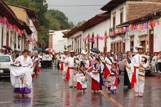

Antiguo Colegio de San Nicolás |
Lugar fundado en 1540 por don Vasco de Quiroga. Esta instituci&oacutae;n se creó con la finalidad de establecer un centro de formación educativa para sacerdotes españoles. Se cree que este colegio es el más antiguo de América. Actualmente la edificación se ha convertido en el Museo de Artes e Industrias Populares, donde se exhibe una de las colecciones más grandes de lacas, madera, cerámica, loza bruñida, entre otras artesanías. Tiene un precio de entrada desde $55 MXN. | |
Casa de los Once Patios |
Edificación de 1742, donde a mediados del siglo XVIII se establecieron las Monjas Dominicas. El conjunto de edificios coloniales que lo integran dio origen a su nombre, donde se exhiben y venden gran variedad de artesanías regionales. El sitio resulta particularmente interesante ya que se puede observar en los talleres de mantas y lacas, la maestría con que los artesanos hacen uso de la imaginación. | |
Plaza Vasco de Quiroga |
Esta gran plaza se encuentra rodeada de edificios de la época colonial y es considerada una de las más bellas de América. Su dimensión, las majuestosas casonas construidas a su alrededor y la ausencia de edificios religiosos la hacen diferentes a todas las dem´s. | |
Templo del Sagrario |
Los trabajos de edificación de El Sagrario iniciaron en 1693 y llegaron a su fin exactamente dos siglos después, años durante los cuales se agregaron diversos elementos decorativos que hasta la fecha se pueden apreciar. Este edificio albergó el Santuario de Nuestra Señora de la Salud hasta 1924. | |
Basilica de la Virgen de la Salud |
Es el templo más importante de Pátzcuaro, cuya peculiaridad es que no se ubica en la parte central de la ciudad, cerca de la sede del poder civil, como en la mayoría de las ciudades proyectadas en los primeros siglos de la Colonia.Fue construida por mandato del primer Obispo de Michoacán, Don Vasco de Quiroga, sobre un centro ceremonial prehispánico, lo que significaba una transformación religiosa. Funcionó como sede catedralicia hasta 1580 cuando se decidió que Valladolid (Morelia) cumpliera con esta labor. | |
Templo y Hospital de San Juan de Dios |
Fundado a mediados del siglo XVII y reparado en el año de 1841 al estilo neoclásico. Este templo presenta en la actualidad bóvedas y cúpula sobr epechinas. La portada del hospital, la más sobresaliente, es de tipo barroco sencillo. A este templo se han trasladado las pinturas que existían en la sacristía del Templo de San Agustín. | |
La Plaza de San Francisco |
Apacible y hermosa plaza con una fuente de brocal redonda al centro y en la parte poniente, un busto de Doña Margarita Maza de Juárez, esposa del Benemérito de las Américas. En uno de sus costados se ubica el portal de Salazar. Para quien gusta de curiosear es recomendable darse una vuelta por el atractivo tianguis de alfafería que se celebra los viernes por la mañana. | |
Palacio de Huitziméngari |
En la plaza principal se localiza esta residencia que perteneció al príncipe Antonio de Huitziméngari, hijo del último gobernante purépecha o Cazonci y ahijado del primer Virrey de la Nueva España, Don Antonio de Mendoza. Aunque tiene fachada sobria, en el interior se encuentra un patio lleno de flores y rodeado de arcos, donde los artesanos indígenas exhiben sus productos |
| 
Fundación de la Ciudad |
Día de Muerto |
Día de la Virgen de la Salud |